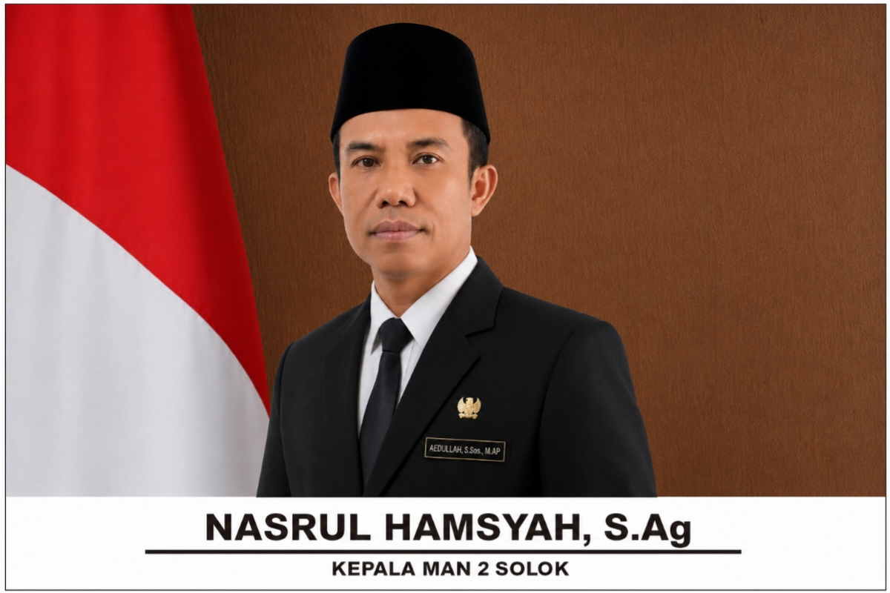
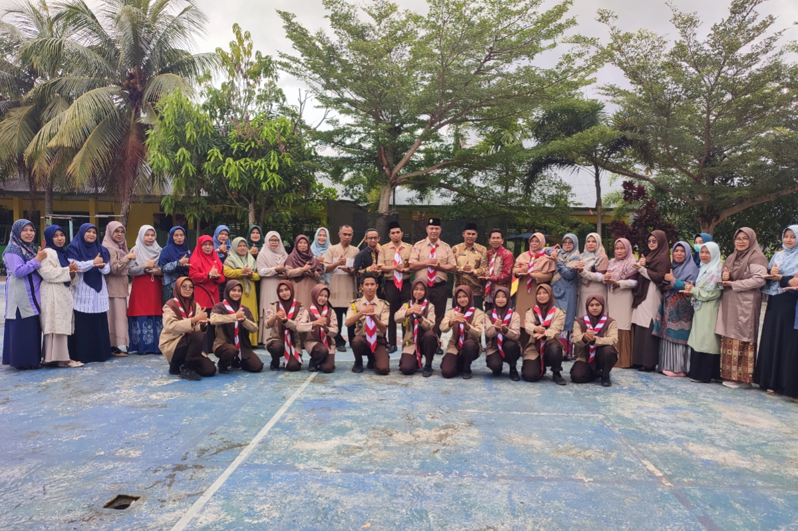

Profil MAN 2 Solok
Menginspirasi dengan Akhlak, Berkarya untuk Dunia
Sambutan Kepala Madrasah

Assalamu'alaikum Warahmatullahi Wabarakatuh.
Selamat datang di Website Resmi MAN 2 Solok. Semoga website ini dapat menjadi sumber informasi yang bermanfaat serta membantu masyarakat mengenal MAN 2 Solok lebih dekat. Terima kasih atas kunjungan Anda.
Nasrul Hamsyah, S.Ag
Kepala Madrasah MAN 2 Solok
Sejarah Madrasah
-
Madrasah Aliyah Negeri 2 Solok awalnya bernama MAS Nagari Singkarak, berafiliasi dengan MAN 1 Solok yang lebih dahulu berdiri. Pada masa awal, proses belajar-mengajar memanfaatkan gedung eks SMPN Singkarak dengan belasan siswa dari sekitar Nagari Singkarak, sementara tenaga pendidik didatangkan secara sukarela dari SMAN 1 X Koto Singkarak.
-
Dua tahun kemudian, pihak yayasan bersama sekolah mengajukan usulan penegerian yang memperoleh rekomendasi dari Kakankemenag Kabupaten Solok dan Kakanwil Departemen Agama Provinsi Sumatera Barat. Perjuangan ini membuahkan hasil: pada , MAS Singkarak resmi menjadi Madrasah Aliyah Negeri berdasarkan SK Menteri Agama No. 515/A/1995.
-
Seiring waktu, MAN Singkarak terus berbenah hingga memiliki gedung sendiri, yang diresmikan oleh Kepala Kantor Wilayah Departemen Agama Provinsi Sumatera Barat, Drs. H. Firdaus Nali.
-
Pada 2015, MAN Singkarak meraih Akreditasi A dengan nomor piagam 0851/BAP-SM/LL/X/2015. Pada 2017, namanya resmi berubah menjadi MAN 2 Solok hingga sekarang.
Visi
“Terwujudnya Madrasah yang Berstandar Nasional yang Islami, Unggul, dan Berwawasan Lingkungan”
Indikator Visi
- 1Unggul dalam Spiritual
- 2Unggul dalam Intelektual
- 3Unggul dalam Emosional
- 4Peduli Lingkungan
- 5Unggul dalam Keterampilan
Misi
- Melaksanakan Kegiatan PBM Sesuai 8 Standar Nasional Pendidikan.
- Menerapkan Nilai-Nilai Islami dalam Kehidupan.
- Menciptakan Lulusan yang Cerdas, Terampil dan Kompetitif di Bidang Imtaq dan Iptek.
- Menciptakan Lingkungan Madrasah yang Bersih, Hijau dan Nyaman.
- Menciptakan Lingkungan Madrasah Bersih dan Bebas dari Sampah.
- Menjadikan Peserta Didik yang Peduli dengan Lingkungan.
- Menjadikan Peserta Didik yang Sehat Jasmani dan Rohani.
Organisasi Siswa MAN

Organisasi Siswa MAN adalah wadah bagi siswa MAN 2 Solok untuk mengembangkan kepemimpinan, kreativitas, dan partisipasi aktif melalui berbagai kegiatan kesiswaan di madrasah.